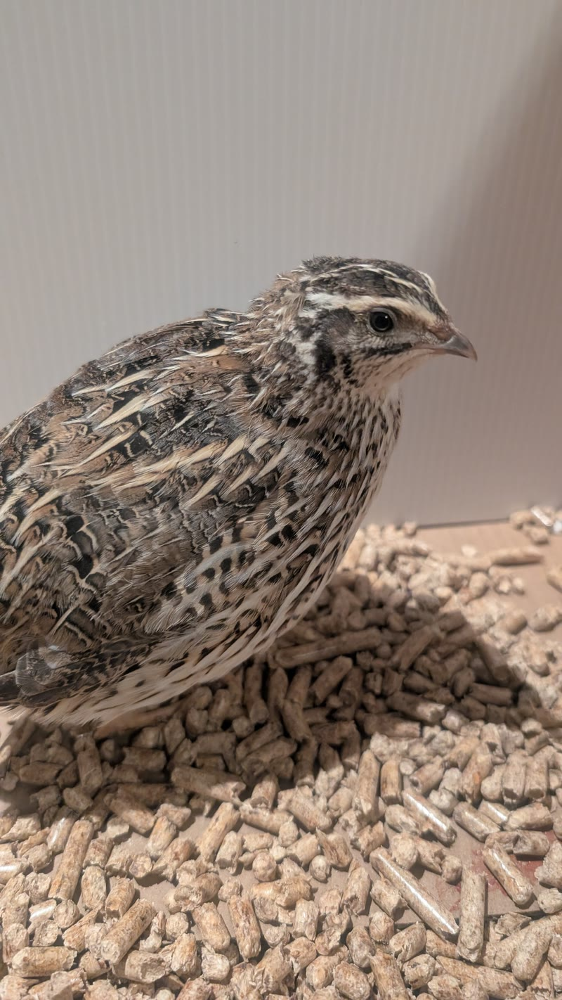

Mathilda
L'aînée de la couvée, curieuse et douce.
Quatre cailles japonaises, nées vers le 20 août 2026, élevées à la maison.
Elles grandissent avec nous, près de Saint-Jean-sur-Richelieu. Les fiches se remplissent au fil des saisons.

L'aînée de la couvée, curieuse et douce.

Nerveuse, débordante d'énergie et curieuse.
D'autres fiches arrivent bientôt.